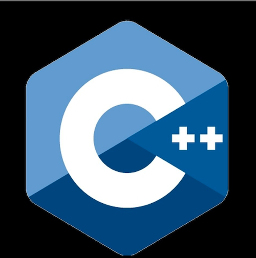
关于小学至大学信息学普及度
初一17班 吴承坤
Table of contents
0前言
0.1研究目的
0.2小组分工
0.3样本容量
1数据分析
2我们的看法
0.1研究目的
作为一名信息学忠实粉丝，我发现大多数班级和学校都不太重视信息学。
当今社会已步入信息时代，我认为重视信息学是十分必要的。
于是，我想调查一下学校里信息学的普及度。
Long live Information!!!
0.2小组分工
确定主题：吴承坤 设计问卷：Kevin
收集数据：iChang 分析数据：1714
制作PPT：坤哥 本组汇报人：吴承恩+蔡徐坤
其实就是我一个人，
这一页只是故意制造幽默。(TSX行为)
0.3样本容量
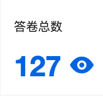
样本容量127，
既不遥遥领先，也不遥遥落后。
1数据分析
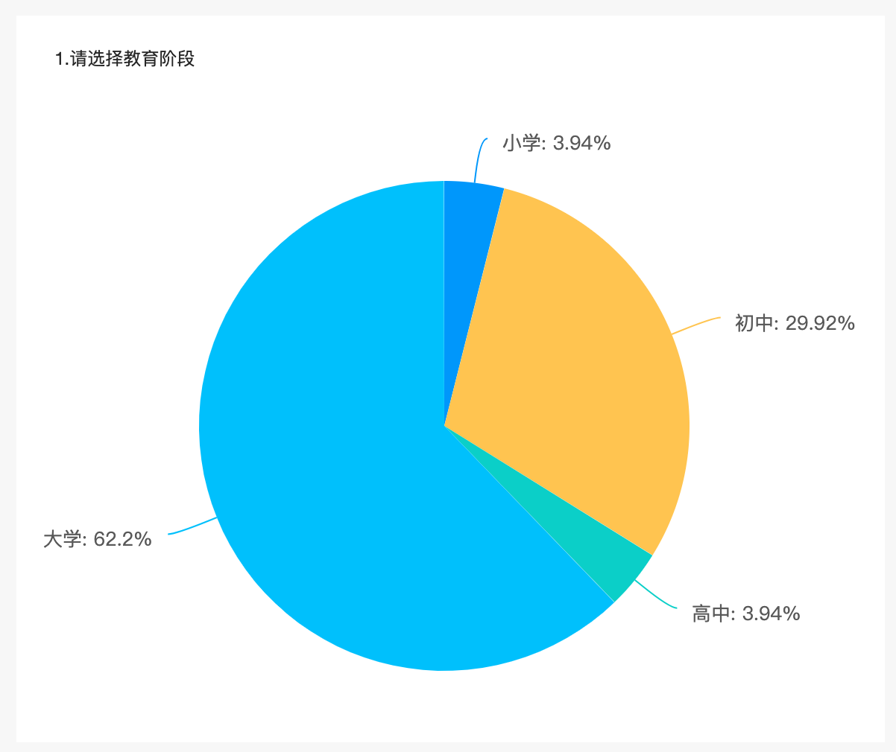
1. 大部分填写问卷的人都是大学生。
1数据分析
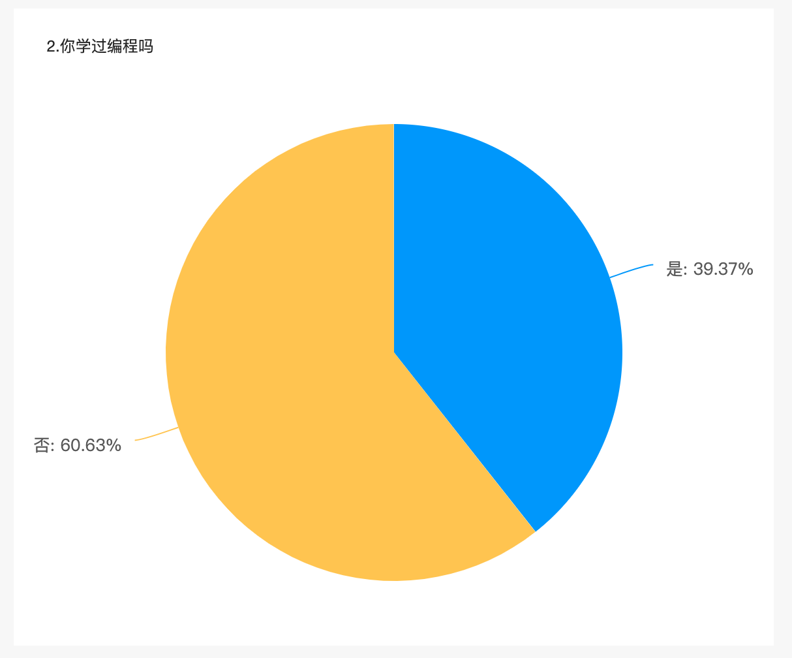
2. 60%的人都没有学过编程。
1数据分析
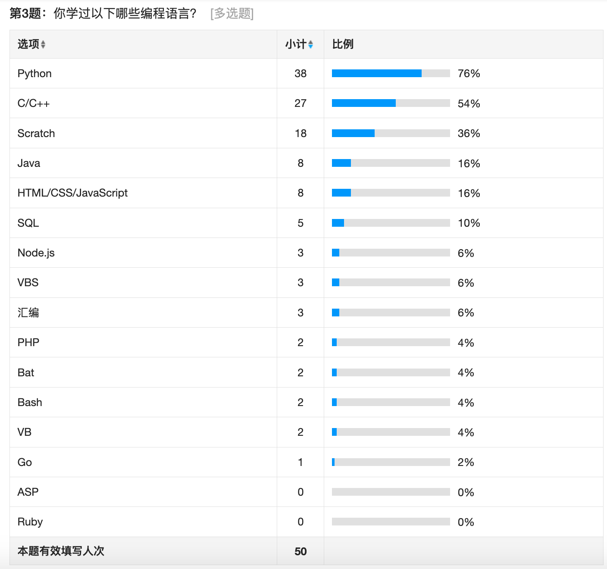
3. 许多人学习的是Python、Scratch之类的高级编程语言。（备注：高级=简单）
我没有攻击Scratch和Python的意思，请不要误解！
1数据分析
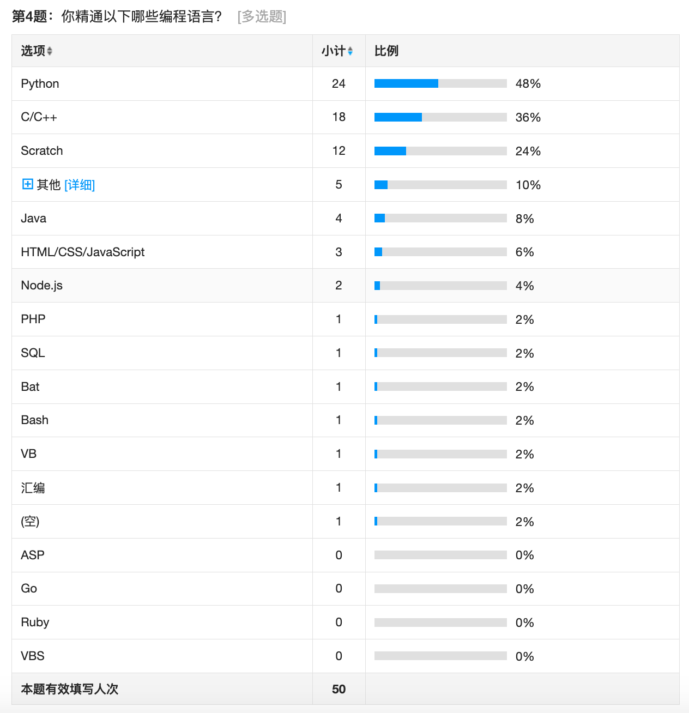
4. 许多人精通的也是Python、Scratch之类的高级编程语言。（备注：高级=简单）
1数据分析
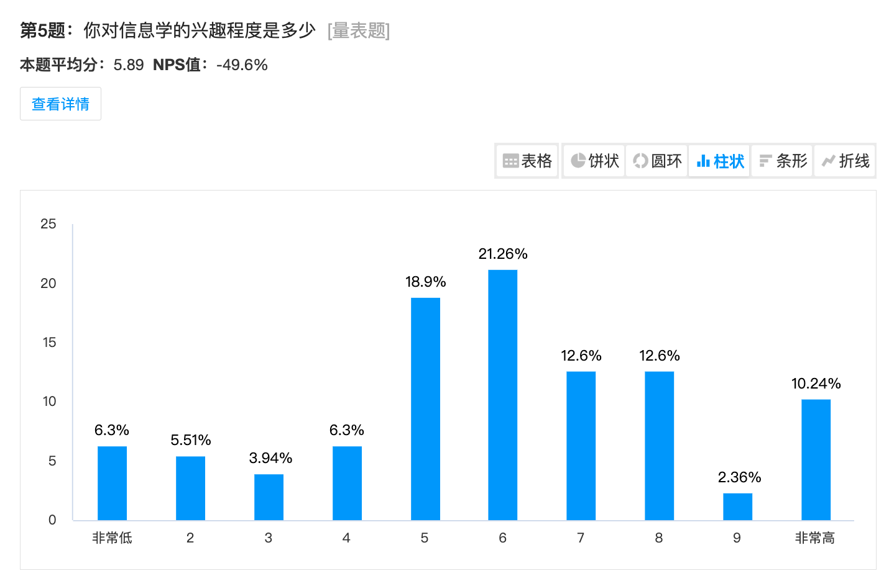
5. 人们对信息学的兴趣程度不高。
1数据分析
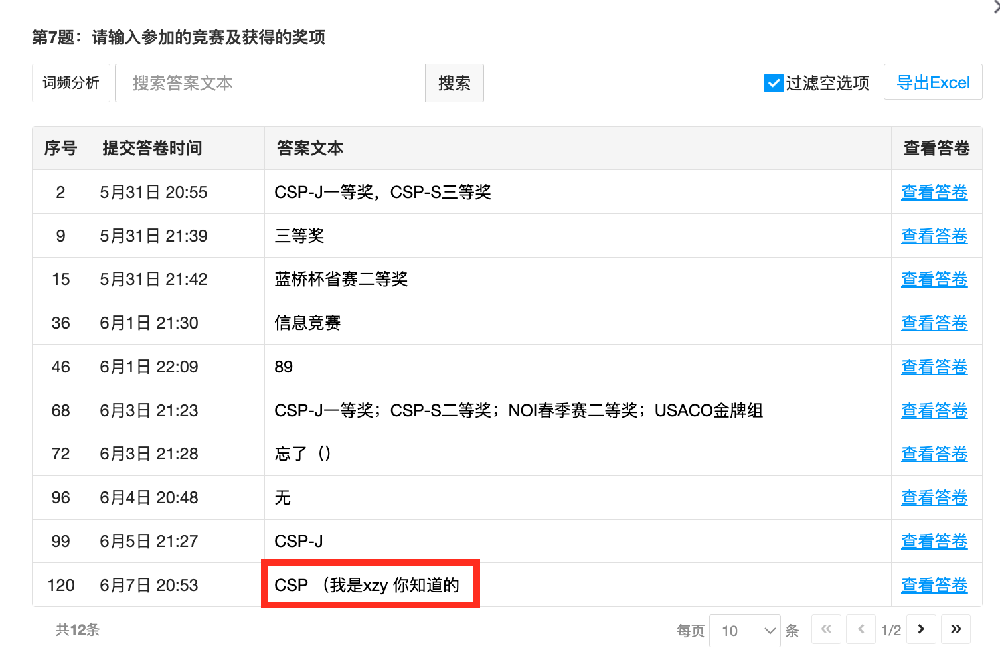
6. 大部分人未参加过信息学竞赛。
1数据分析
 7. 许多人获得了CSP-J一等奖，其它比赛获得一等奖的人数较少。
7. 许多人获得了CSP-J一等奖，其它比赛获得一等奖的人数较少。
小知识：CSP-J是CSP-Junior的缩写，是国内一种很多人参加的信息学竞赛，难度较低，一等奖人数较多。
1数据分析
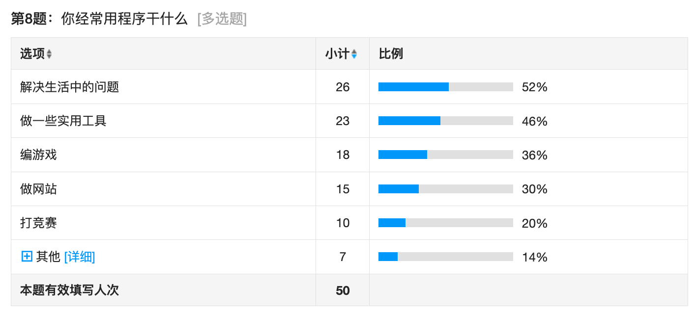
8. 人们经常使用程序来解决生活中的问题，也有不少人用它来编一些实用工具。
1数据分析
 9. 大多数班级每周只有1次左右的信息课，甚至0次。
9. 大多数班级每周只有1次左右的信息课，甚至0次。
1数据分析
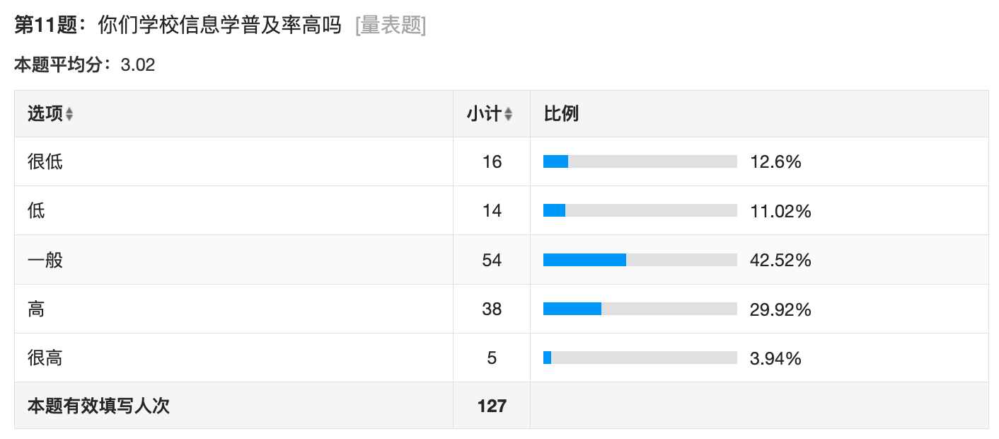
1数据分析
 1数据分析
1数据分析
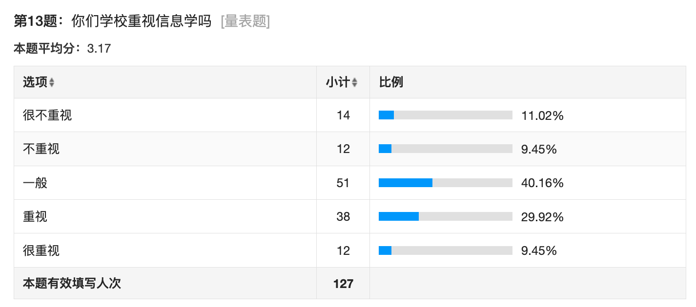
1数据分析
 10. 很多班级和学校的信息学普及率和重视程度并不高。
1数据分析
10. 很多班级和学校的信息学普及率和重视程度并不高。
1数据分析
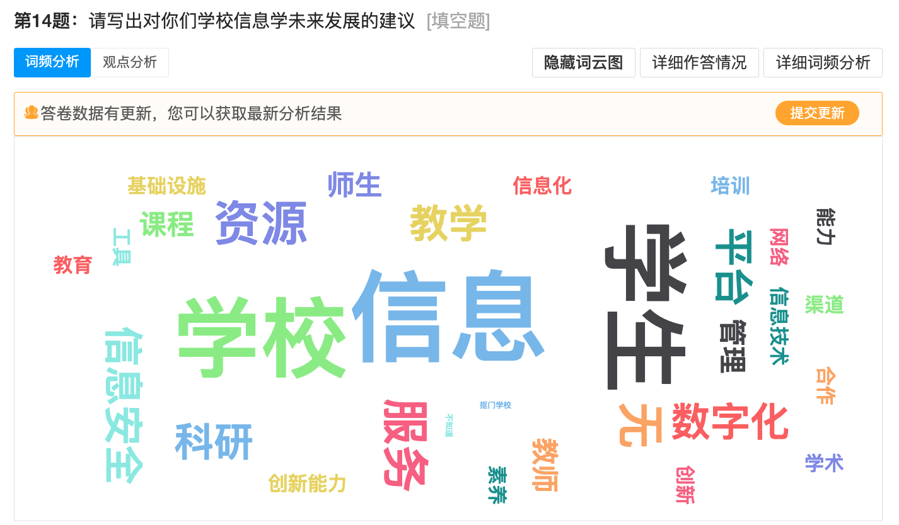
11. 人们对信息学的建议主要是从学校等角度提出的。
2我的看法
00很多人，甚至很多大学生，都没学过编程（信息学）。我认为信息时代，学习信息学是很重要的，因为它符合时代的特征。
01许多班级和学校都不重视信息学，这也是很多人没接触过信息学的原因之一。
02很多人对信息学的兴趣不大，我希望多做一些信息学的宣传，帮助提高人们对信息学的兴趣。（可以从信息学与生活的关系的角度宣传，因为许多人将信息学用于解决生活中的问题）
03希望学校开展信息学竞赛班，提高信息学竞赛水平。